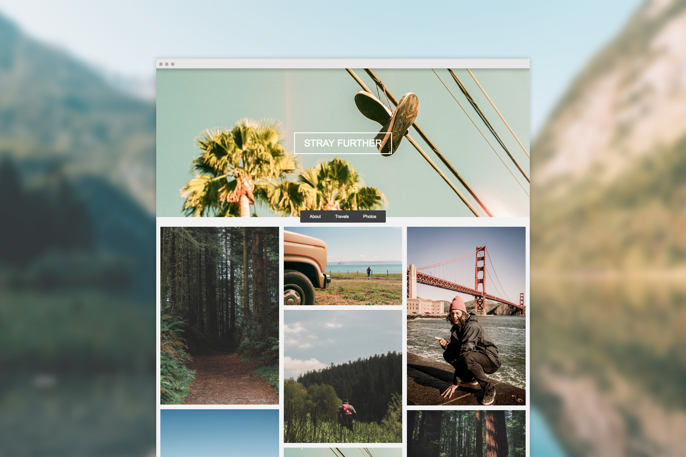

STRAY FURTHER!
In a world where wrung out memes and overbearing political stances prey on nearly everyone's social media feeds, sometimes there comes a need to share your stories elsewhere. This personal blog design was one that I fleshed out after returning from an extended trip up the West Coast, to showcase my adventures and love for photography!

< Return